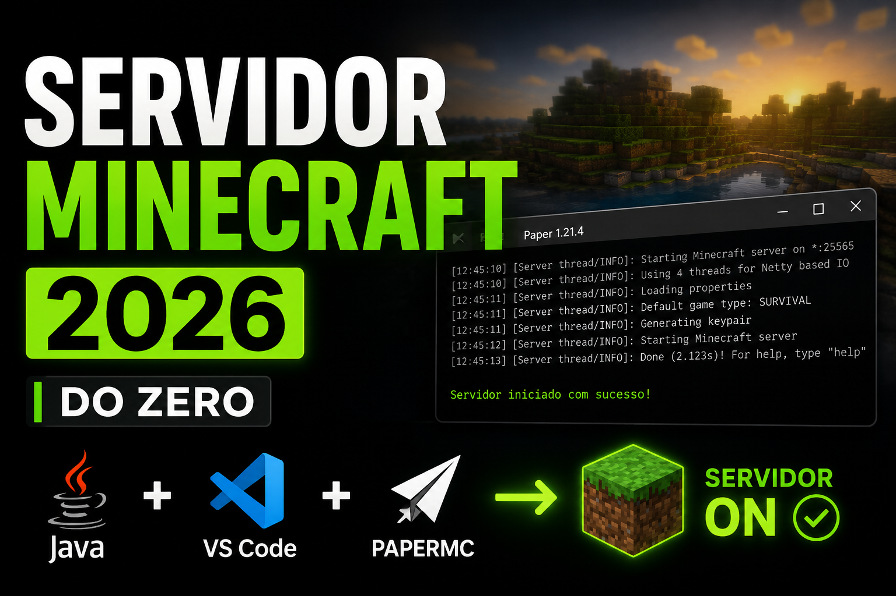

Criando um servidor do absoluto zero
Instalação do Java, download do Paper, criação da pasta do servidor e primeiro start.
Assistir no YouTubeUma série completa onde vamos criar um servidor de Minecraft do absoluto zero, passando por instalação, configuração, plugins, otimização, arquivos e muito mais.
Todos os episódios publicados no YouTube ficarão organizados aqui.

Instalação do Java, download do Paper, criação da pasta do servidor e primeiro start.
Assistir no YouTubeAjustes do server.properties, eula, whitelist, porta, dificuldade e configurações base.
Em breveBaixe os PDFs usados durante as aulas para acompanhar a série com mais facilidade.
Documento principal reunindo explicações e organização geral do projeto.
Aqui ficam os arquivos criados durante as aulas, prontos para download direto.
Arquivo inicializador do servidor com Java 21 e flags otimizadas.
Estrutura inicial do servidor usada no começo da série.
Links oficiais para baixar as ferramentas utilizadas durante a série.